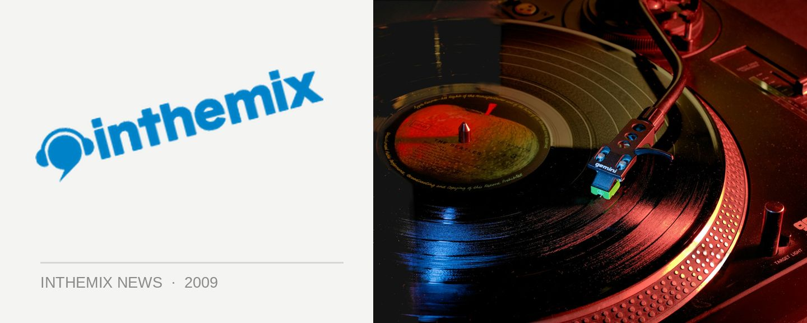

Harbourlife details announced!
Want proof that summer is on the way? Fuzzy’s massively popular seaside party Harbourlife will be back this November, and ITM has the skinny on what international acts will be bringing the music and when it’ll all be going down.
Set to return to the stunning surrounds of Mrs Macquarie’s Chair near the Royal Botanic Gardens on Saturday 21st November, French house master Martin Solveig will be providing the grooves, backing up his widely loved performances at Parklife last year, and he’ll be joined on headline duties by breakbeat soldiers the Stanton Warriors, who will be touring in support of an alleged fourth volume of their famed Stanton Sessions releases.
Also playing at Harbourlife will be nu-disco outfit Holy Ghost! from New York’s DFA label, along with local heroes the Bag Raiders who will be bringing their new live show to the party.
It’s proved to be one of the most sought after events on the Sydney dance calendar since its debut 2003, rivaling events like Splendour in the Grass for the speed at which tickets are snapped up, and the 2009 edition isn’t looking on being any different. So have those credit cards at the ready…
Harbourlife 2009 returns to Fleet Steps, Mrs Macquarie’s Chair on Saturday 21st November. Check out the lineup…
Martin Solveig
Stanton Warriors
Holy Ghost! (DJ set)
Bag Raiders (new live show)
Tickets are $120 +BF, with member presales commencing from Tuesday 8th September and on sale to the general public on Thursday 17th September. Want more Harbourlife fun in the leadup to November? Check out ITM’s Festival Page.